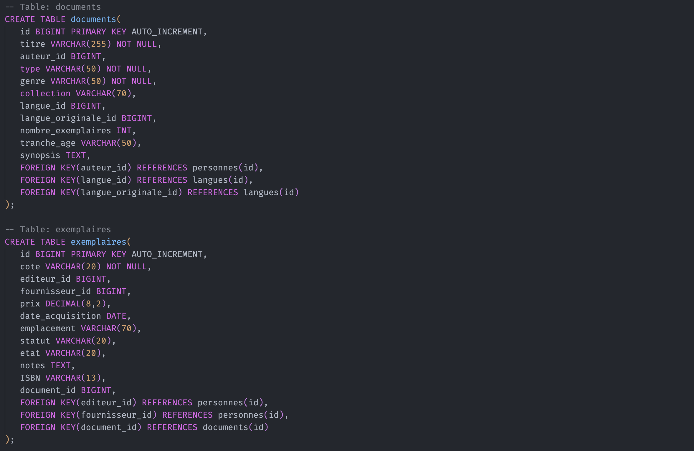

Dictionnaire de données et MCD pour une bibliothèque
Compétences mises en oeuvre pour ce projet :
- Collecter, suivre les demandes
- Traiter des demandes concernant les applications
- Analyser les objectifs et modalités d'organisation d'un projet
- planifier les activités
Le but de ce TP à été de se mettre en condition "réelle", en revenant à la base d'un projet. On imagine ici qu'une Bibliothèque nous a embauché pour developper un gestionnaire de base de données.
Nous nous sommes donc concentrés ici sur les deux premières étapes de tout projet incluant une base de donnée, et même si ces étapes ne comportent pas vraiment de code à proprement parler, elles restent néanmoins primordiales.
Le dictionnaire de données
La première étape est la réalisation d'un dictionnaire de donnée, On prend ici le temps de lister tout ce dont notre base de donnée va avoir besoin (type de données, relations entre ces dernieres...). Dans l'idéal, cette partie s'effectue en parallèle d'un dialogue auprès des clients qui sont aussi les futurs utilisateurs, et qui savent mieux que quiconque leurs besoins.
Ici une image de notre dictionnaire de données, on peut voir que les données sont déja pré-organisées et prêtes à passer à l'étape suivante :

Cette étape prend du temps, et ne doit pas être négligée car un oubli découvert plus tard dans la réalisation d'un projet (une fois que la base de donnée est créée et fonctionnelle par exemple) peut vite être un casse-tête à regler...
Le Modèle Conceptuel de Données (MCD)
Après avoir mis à plat l'ensemble des données dont nous allons avoir besoin, il est temps d'organiser ces dernieres, avec une modélisation conceptuelle de données.

Pour ce faire, nous avons utilisé l'application Looping, qui permet de créer des schémas de base de donnée, sur un modèle Entité/Relations (Tables et Relations entre les tables).
L'interêt de tels schémas et de pouvoir avoir un regard visuel sur notre base de donnée, et ainsi pouvoir plus facilement la structurer, en comparaison avec une création en script directement.
On regroupe ici nos differentes données dans des tables, qui vont être reliées entre elles via des relations.
L'application Looping permet ensuite de générer un script SQL depuis notre modèle, mais ce script doit généralement être édité pour etre parfaitement fonctionnel, ou pour convenir à notre façon de faire.
Conclusion
A la fin de ce TP, nous avons donc une base de donnée fonctionnelle, bien structurée et surtout adaptée aux besoins des utilisateurs, grace aux differentes étapes effectués. Ces dernières peuvent encore une fois sembler futiles, mais elles peuvent éviter de devoir faire marche-arrière alors que le projet est à un stade beaucoup plus avancé !